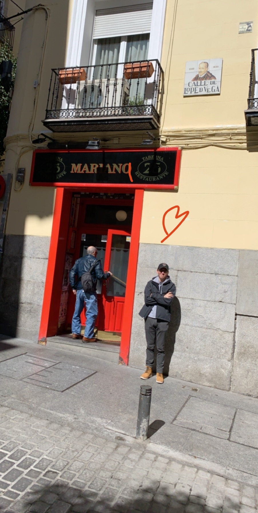
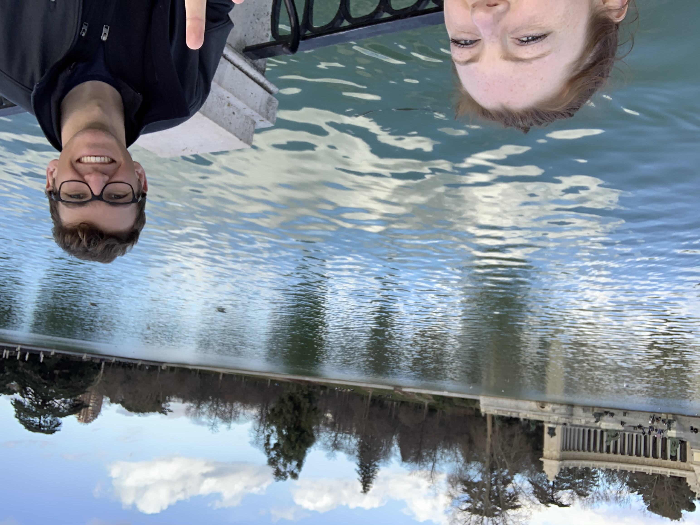
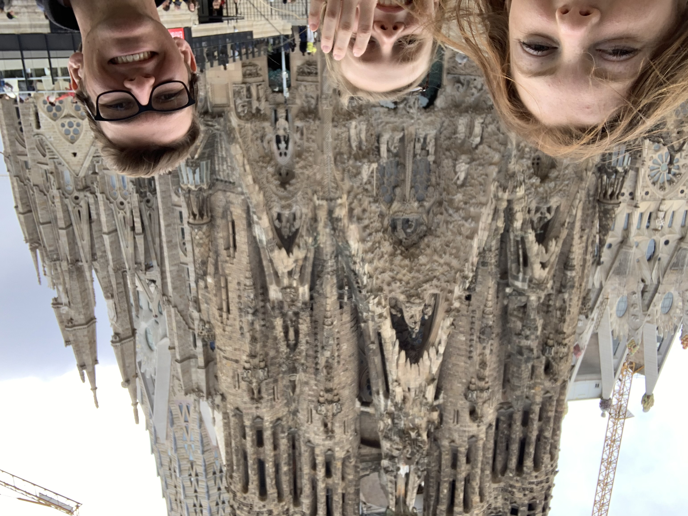
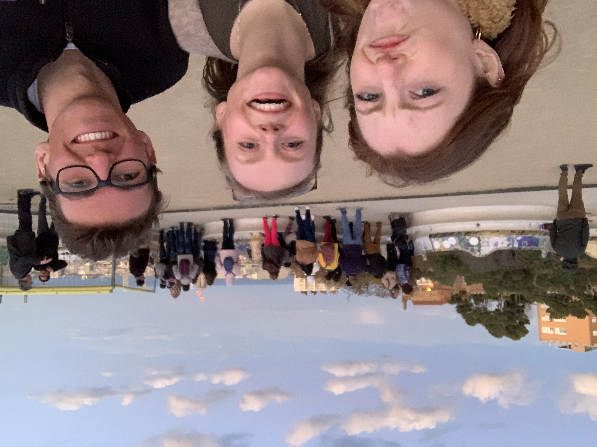

Essay 3: A Digital Photo Story
Hey! This is a digital photo story of my trip to Barcelona last spring break! I've mixed photos of the trip with
pieces from my essay. I'm also thinking of epanding this and including as similar project related to my essay 2.
Thanks for checking it out!

Ted was easy enough to talk to, but we could feel the empty space that Mariana was supposed to have filled with
her high
energy and nearly non-stop chattering.

“Is this it?” I said as Ted and I exchanged looks. The site, number one recommended by our Airbnb host appeared to just
be a really tall flag in the middle of a traffic circle. We couldn’t help but laugh, and once we started we couldn’t
stop. The ridiculousness of the situation was too much.

With a few destinations in our back pocket, we set out wandering the streets and wondering what it would be like to be a
local.

We’d occasionally stop for food and passed by a few notable landmarks, but mostly we just walked and talked. I found
myself slowly getting to know Ted, collecting these personal facts and stories from his life and sharing some of my
own.

On our last night, we made it our mission to watch the sunset from one of the various lookout points we had found
through a quick google search. But we’d been slow in our wandering and we reached the base of the hill just as the sun
was about to set.
We’d occasionally stop for food and passed by a few notable landmarks, but mostly we just walked and talked. I
found
myself slowly getting to know Ted, collecting these personal facts and stories from his life and sharing some of
my
own.